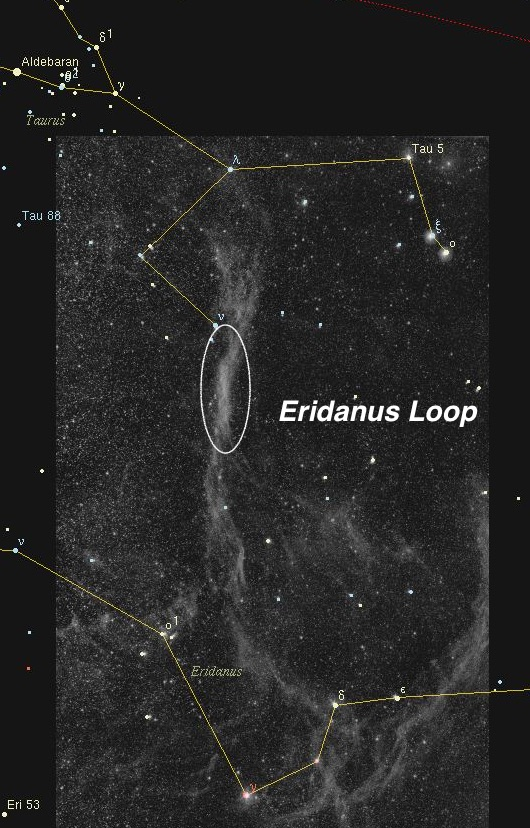
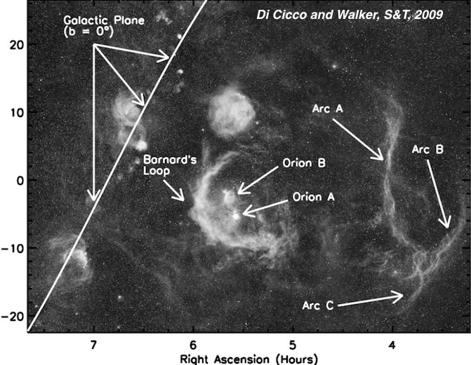
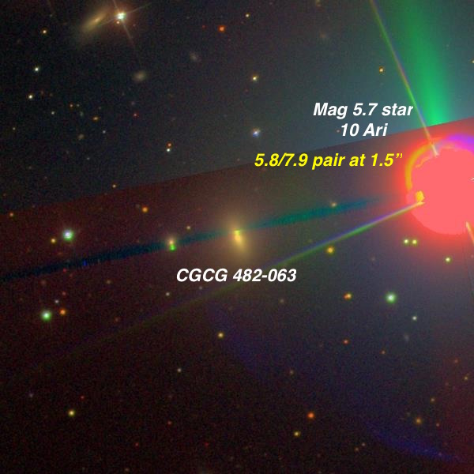
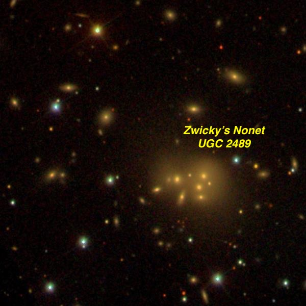
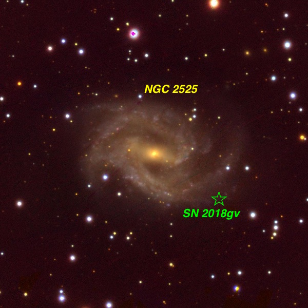
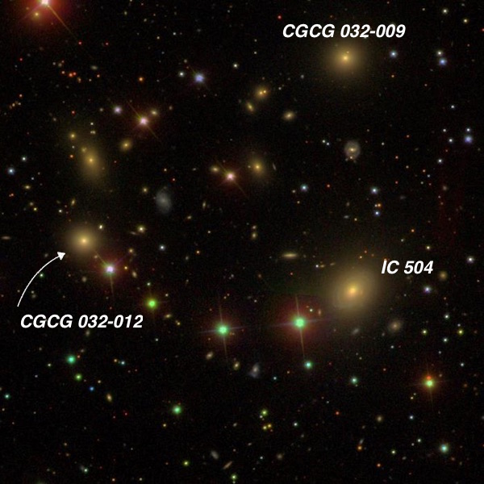
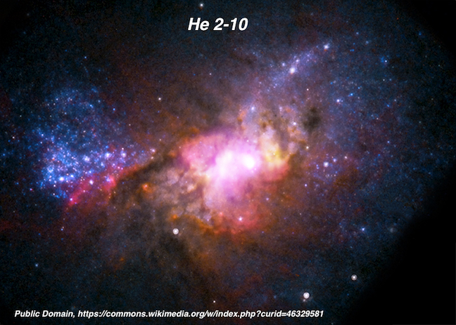
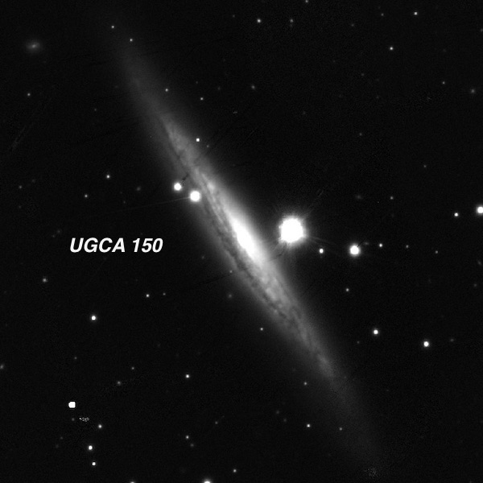

OR: The Eridanus Loop and more, Feb 8, 2018
On Thursday, February 8th, I met with Mark McCarthy at a remote 3000-ft site (Willow Springs) in the southern section of the Diablo Range, best known for Mt Hamilton (home of Lick Observatory), Mt. Diablo (which dominates the central east bay of the San Francisco region) and mile-high San Benito Mountain anchoring the south end of the range. Overall, observing conditions were quite good — there was no wind, no dew, fairly good seeing and pretty transparent skies. SQM-L readings started at 21.3 but after midnight I recorded 21.53 and was hitting 16th magnitude galaxies in my 24-inch f/3.8 Starstructure. By 2:00 AM, after roughly 7 hours of observing, I had logged nearly 50 objects. Some of the highlights are described below (Images are from the Sloan Digital Sky Survey unless stated otherwise).
— Steve Gottlieb


Eridanus Loop = Sh 2-245 = LBN 839 04h 01m +02° to +05° Size 720’
Distance estimate: ~500 to 600 l.y. for near side and perhaps 1200-1500 light years to the far side Size: ~1200 l.y. across Age: ~5-10 million years (probably due to multiple supernovae at various times) Orion-Eridanus superbubble: The Eridanus Loop is just the southernwestern section of the shell and has been proposed to be a compressed (from the expanding supershell) pre-existing, ionized gas cloud
The most exciting observation was viewing the Eridanus Loop (Sh 2-245), a ginormous superbubble or shell, created by supernovae and the stellar winds of massive OB stars sweeping up and compressing material in the interior cavity and estimated to be 5-6 million years old. This structure is huge, extending 30° north and south, but has an extremely low surface brightness, and is both larger and much fainter than Barnard’s Loop. Although Barnard’s Loop is plotted on the Uranometria 2000.0, don’t bother looking for the Eridanus Loop as its missing from the atlas. I wasn’t feeling optimistic about my chances of seeing anything, as I forgot to bring along my 80-mm short-focus refractor (i.e. finder) and thought the relatively small field in my 24-inch wouldn't provide any contrast with the sky. Ah, but I was wrong.
Using Mark's 31mm Nagler (along with a Paracorr) yields 84x and a 1.0° field. I zeroed in on the region south of Nu Tauri (circled on the image), which is the brightest vertical section between about +05° and +02° declination. After a bit of staring into the eyepiece (unfiltered), I realized there was a definite north-south running edge to the stream of nebulosity (particularly on its eastern side). It wasn’t difficult to follow it north and south a few eyepiece fields (perhaps 3-4°). To me, the nebulosity had a dull sheen, like a dirty river running through the fields. I didn’t spend time to see exactly how far it could be traced but it was cool just to catch a section! The image is from Axel Mellinger and I’ve circled the region that Mark and I viewed in my scope. The second image is a very long exposure taken by Dennis Di Cicco and Sean Walker and reveals that the Eridanus Loop is just a small part of an stupendous shell surrounding the entire constellation of Orion and extending west to the Eridanus Loop (broken up into 3 sections — Arc A, B and C). The large circular nebula above Barnard’s Loop is the Lambda (Meissa) Orionis Nebula (Sh 2-264)

CGCG 482-063 02 03 51.5 +25 55 31 Size 0.9'x0.7'; PA = 24d
This galaxy is situated just 2.9' east of 10 Aries, a tight, unequal double (5.8/7.9 at 1.2") that makes viewing this 14th magnitude galaxy more of a challenge. At 282x it appeared fairly faint, round, 24” diameter, sharply concentrated with a very bright core and a low surface brightness halo. The best view was by placing the bright star outside the field. The challenging double was cleanly resolved using an 8-inch off-axis mask on my 24-inch.

UGC 2489 = Zwicky's Nonet 03 01 51.6 +35 50 27 Size 1.1'x0.6'
Zwicky’s Nonet is a compact merging ensemble of nine galaxies in Perseus! Initially I could only see a single glow, perhaps 30” diameter, but eventually I could resolve two components (probably both 16th magnitude) within this glow. It was difficult to tell if they were non stellar, but was certainly 6" or less in size.

NGC 2525 08 05 38.0 -11 25 41 V = 11.6; Size 2.9'x1.9'; Surf Br = 13.3; PA = 75d
13th magnitude SN 2018gv, discovered on Jan 15th, was easily visible on the southwest edge of the galaxy [50" west and 39" south of center]. A mag 14.5 star was also easy close southwest of the supernova and a very faint and close pair is an additional 20" SW. I’ve marked the position of the supernova on this PanSTARRS image.
The galaxy itself appeared fairly bright and large, oval 4:3 ~E-W, broad concentration, no distinct core but the halo appeared patchy or uneven (brighter and darker regions), strongly hinting at spiral structure. At high power, a short low contrast central bar (elongated roughly 3:1 E-W) was visible with a slightly brighter nucleus.

IC 504 08 22 41.2 +04 15 45 V = 12.9; Size 1.2'x0.9'; PA = 139d
IC 504 is the brightest in a group called WBL 179. I spent some time in this field and picked up 7 members including IC 505 and IC 506 . This SDSS images shows a distinctive looping chain of stars that leads to CGCG 032-012 , one of the members I picked up. In fact there is an obvious chain of faint galaxies and stars that form a near perfect ellipse!

He 2-10 = ESO 495-021 08 36 15.2 -26 24 35 V = 11.6; Size 1.7'x1.3'; Surf Br = 12.4
He 2-10 is a dwarf starburst galaxy in Pyxis. Wikipedia gives some of the background on the galaxy, but its black hole weighs in at a couple of million solar masses. That’s only half the Milky Way’s, but the dwarf itself weighs only a few percent of the mass of the Milky Way. Visually, its small and bright, due to its energetic nucleus. Although this galaxy doesn’t have a NGC designation it was discovered by E.E. Barnard who ran across it in February 1889 at Lick Observatory while searching for comets. He noted in his logbook "Sweeping E of Sirius, I find a very small, bright round nebula not in NGC. It is preceding a 7m star, which will use to compare it with." The comparison star is mag 6.8 SAO 176170 and his sketch matches the sky, with the bright star at the east edge of his 150x field, a star close west of He 2-10, a very faint star at its east edge, and two stars close northwest and northeast. But Barnard never reported the discovery, so unfortunately he failed to receive credit.

UGCA 150 09 10 48.8 -08 53 38 V = 11.3; Size 5.2'x0.9'; Surf Br = 12.8; PA = 33d
UGCA 150, an edge-on spiral in Hydra, is situated just following a 9th magnitude star with the star pinned barely off the west end of the nucleus. Long extensions extend SW-NE, though the star is certainly an annoyance. Nevertheless, I found the extensions asymmetrical, with the northeast end twisting slightly towards the north near the tip. The southwest end was very diffuse and appeared to flatten out near the end, seemingly spreading further south and creating a subtle "integral sign" effect.William Herschel ran into this object back in March of 1787, but wasn’t sure what he had encountered. His notes read, "3 or 4 unequal stars in a row with vF nebulosity between them, but may be a few much smaller stars mixed with them and I rather suppose that to be the case.” As he was quite meticulous in only cataloging confirmed nebulae, this galaxy never received an Herschel-designation or a NGC number. The image is from the PanSTARRS survey.